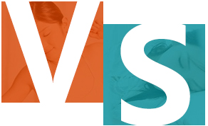
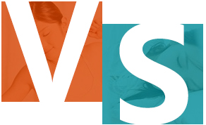

坐小月子
坐小月子是女性改善体质的黄金时机，不仅可以使您的生殖系统恢复到术前状态，还可以缓解或治愈低血压、贫血、背痛、肠胃不适等疾病，让身体各个系统、皮肤及器官都活跃起来，去腐生新，恢复弹性，产生再创造的功能。
不坐小月子
如果在术后没有静心休养、接受专业的调理和治疗，容易引发妇科炎症、月经紊乱、闭经、宫颈糜烂、宫腔粘连、终身不孕、习惯性流产等并发症。
坐小月子是女性改善体质的黄金时机，不仅可以使您的生殖系统恢复到术前状态，还可以缓解或治愈低血压、贫血、背痛、肠胃不适等疾病，让身体各个系统、皮肤及器官都活跃起来，去腐生新，恢复弹性，产生再创造的功能。
如果在术后没有静心休养、接受专业的调理和治疗，容易引发妇科炎症、月经紊乱、闭经、宫颈糜烂、宫腔粘连、终身不孕、习惯性流产等并发症。
| 小月子 | 大月子 | |
| 定义 | 女性自然流产或人工流产后，修养的时期。 | 女性产后修养的时期。 |
| 时间 | 怀孕小于13周的小月子一般建议休息两周，超过13周最好是休息一个月。但是也可以根据女性身体恢复状况来调整。 | 产后休息一个月。目前推荐40天。 |
| 饮食 | 禁忌使用催奶食物、催奶汤之类的，以免引起乳腺堵塞。 | 鼓励使用催奶食物、催奶汤，保证婴儿所需奶量。但不建议早急于催奶。 |
| 心理 | 流产后的女性心情都会非常低落，除了身体上的创伤之外，心情调节也是非常重要的。 | 因为孩子出生，新妈妈可能会觉得家人将重心放到了孩子身上，遗漏了自己或者因为经验不足，无法达到自己之前所想的要求而出现明显的焦虑。 |
妇产医生定时查房，随时观察术后身体恢复的情况；专业的护理团队为术后身体做理疗，缓解疼痛；专业心理咨询师，关心女性的术后心理变化。
专业的盆底修复医师做术后生理机能维养，避免漏尿、阴道松弛等状况的发生。
根据女性身体的多样化，指定个性化营养配餐，帮助女性快速恢复身体健康
五星级月子私密休养房间，不同房型均配备独立的卫生间、淋浴间、独立厨房，同时装有智能马桶、挂壁式洗衣机等，保护女性隐私不被打扰。